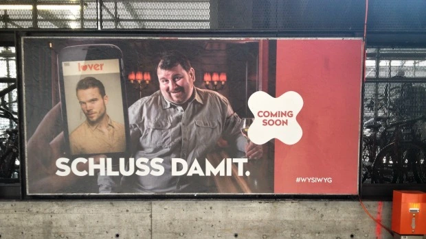
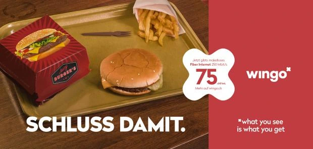

Create and launch a national digital brand.
Challenge
Low-cost operators were putting pressure on Swisscom, with a growing risk of losing its most price-sensitive customers. To respond without weakening the main brand, the group needed a distinct offer for the whole Swiss market — fast.
Contribution
Inside Swisscom: created and launched Wingo in a matter of months — positioning, brand development, a national campaign across the three language regions, agency management and the build-up of a six-person digital team. A retention strategy built on personas and customer journeys then cut churn by 12%.
Results
- Launched a national brand in 9 months
- Reached 25% awareness in the core target within 6 months
- Acquired tens of thousands of customers in the first year
- Cut churn by 12% through the loyalty strategy
The launch campaign
Developed with the agency Rod, the campaign was designed as one integrated whole across advertising, digital, social media and PR, all built on a single promise: “What you see is what you get”.

For one week, an unsigned campaign proclaimed in bold letters “Schluss damit.” (“Enough.”): the online date who looks less fresh than on the profile, the dress that looked better on the model. Several media picked up this gap between promise and reality, which we have all grown used to, before anyone knew who was behind it.

On 1 April 2015 the brand revealed itself: Wingo, “What you see is what you get”. No small print, no contract term, plenty of speed and a price with no hidden costs. Posters, print ads, a TV spot, digital and social media all followed the same mechanic: the promise kept, exactly what you see.